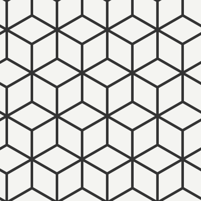

Grid Symmetry
While CellRotation describes symmetries that map a single cell onto itself, grid symmetries talks about maps from the entire grid onto itself.
For a typical basic grid like SquareGrid, that means it handles rotations and reflections, like CellRotation, it also handles translations (and combinations of the three).
Grid symmetries are defined as below
public class GridSymmetry
{
public CellRotation Rotation { get; set; }
public Cell Src { get; set; }
public Cell Dest { get; set; }
}
This (generally) means the map that maps Src to Dest, while also rotating it as specified. This is sufficient to fully specify the map on other tiles, via parallel transport.
Note that the symmetries of a grid are not related to the symmetry of the cells. For example, consider the rhombille tiling:

Here, each cell is a diamond, so has rotational symmetry 2 - i.e. you must rotate a tile by 180 degrees before it maps to itself. But the grid itself has rotational symmetry 6 as you can rotate the whole grid by 30 degrees and get the same grid again.